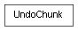

class cymel.utils.operation.UndoChunk¶

-
class
cymel.utils.operation.UndoChunk¶ ベースクラス:
object1つのアンドゥチャンクを作るコンテキスト。
インスタンス
undoChunkが生成済み。>>> import maya.cmds as cmds >>> import cymel.main as cm >>> cmds.file(f=True, new=True) u'untitled' >>> cm.Transform() Transform('transform1') >>> with cm.undoChunk: ... cm.Transform() ... cm.Transform() ... Transform('transform2') Transform('transform3') >>> cmds.undo() >>> cm.Transform.ls('transform*') [Transform('transform1')]